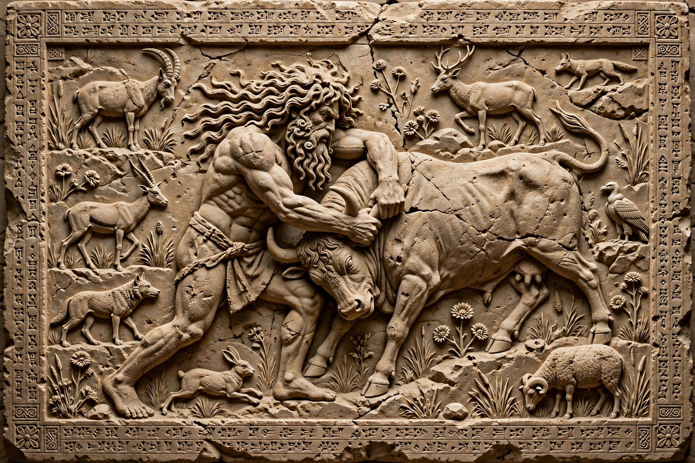

Enkidu
| Enkidu | |
|---|---|
 | |
| Creator | Aruru, goddess of creation |
| Home | The steppe; later Uruk |
| Companion | Gilgamesh |
| Texts | Epic of Gilgamesh; Sumerian Gilgamesh poems |
Enkidu (Sumerian: Enkidu, possibly "lord of the pleasant place") is a legendary figure in ancient Mesopotamian mythology, the wild man created from clay by the goddess Aruru and the inseparable companion of the hero Gilgamesh in the Epic of Gilgamesh. His taming, friendship, adventures and death form the emotional core of the epic and drive Gilgamesh's subsequent quest for immortality.
Creation and taming
The people of Uruk, oppressed by the arrogance of their king Gilgamesh, cry out to the gods, who instruct Aruru to create an equal for him. She pinches off clay, casts it onto the steppe, and forms Enkidu — a hairy wild man who eats grass with the gazelles and frees animals from hunters' traps. A trapper, advised by his father and by Gilgamesh, brings the temple prostitute Shamhat to the watering hole. After six days and seven nights with her, Enkidu is rejected by the animals but gains reason and understanding; Shamhat clothes and feeds him with bread and beer, and leads him to Uruk.
Friendship with Gilgamesh
Enkidu blocks Gilgamesh from entering a wedding house, and the two fight in a mighty wrestling match. Gilgamesh prevails, but the rivals recognise each other's worth and embrace as friends — in some readings, as lovers. Together they resolve to win fame by slaying Humbaba, the monstrous guardian of the Cedar Forest appointed by Enlil.
The Cedar Forest and the Bull of Heaven
Despite Enkidu's forebodings and the warnings of the elders, the heroes journey to the Cedar Forest, defeat Humbaba with the help of the sun god Shamash, and fell the great cedars. When the goddess Ishtar propositions Gilgamesh and is spurned, she sends the Bull of Heaven against Uruk; Enkidu seizes the bull by its tail while Gilgamesh kills it, and Enkidu hurls a haunch of the bull at the goddess in contempt.
Death
The gods decree that one of the pair must die for these offences, and Enkidu falls ill. Over twelve days he wastes away, cursing the door he made from the cedar and the trapper and Shamhat who civilised him — then, blessed by Shamash, he blesses Shamhat instead. He dreams of the gloomy Mesopotamian underworld, the "house of dust", and dies. Gilgamesh mourns extravagantly, wandering the steppe in grief, and — terrified by his own mortality — sets out to find Utnapishtim, the survivor of the flood.
Interpretation
Enkidu's arc — from nature to culture, from ignorance to wisdom purchased at the price of death — is often read as an allegory of the civilising process and of humanity's fall from a state of nature. In earlier Sumerian poems Enkidu appears as Gilgamesh's servant; the Old Babylonian epic elevated him to the king's equal and double.